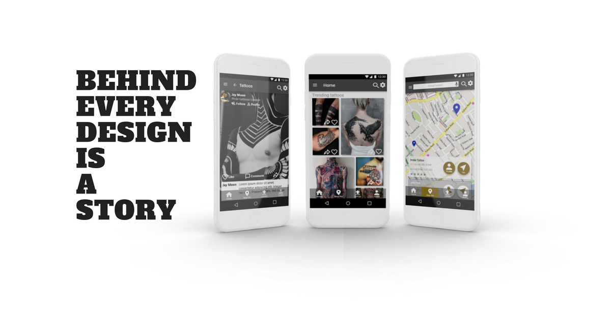
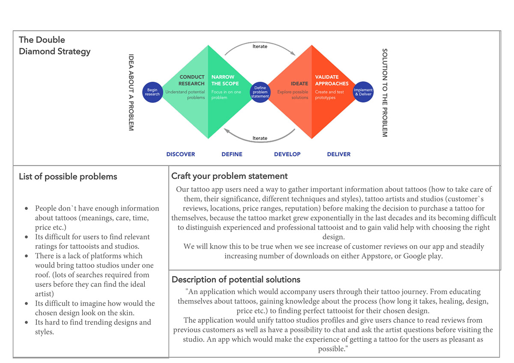
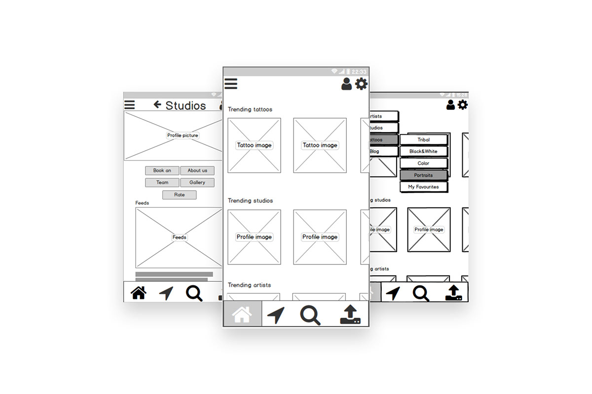
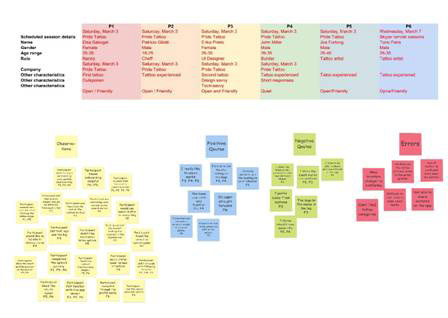
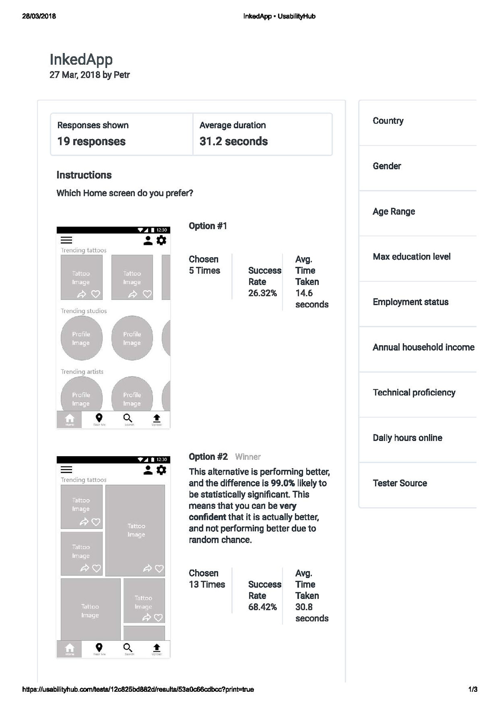
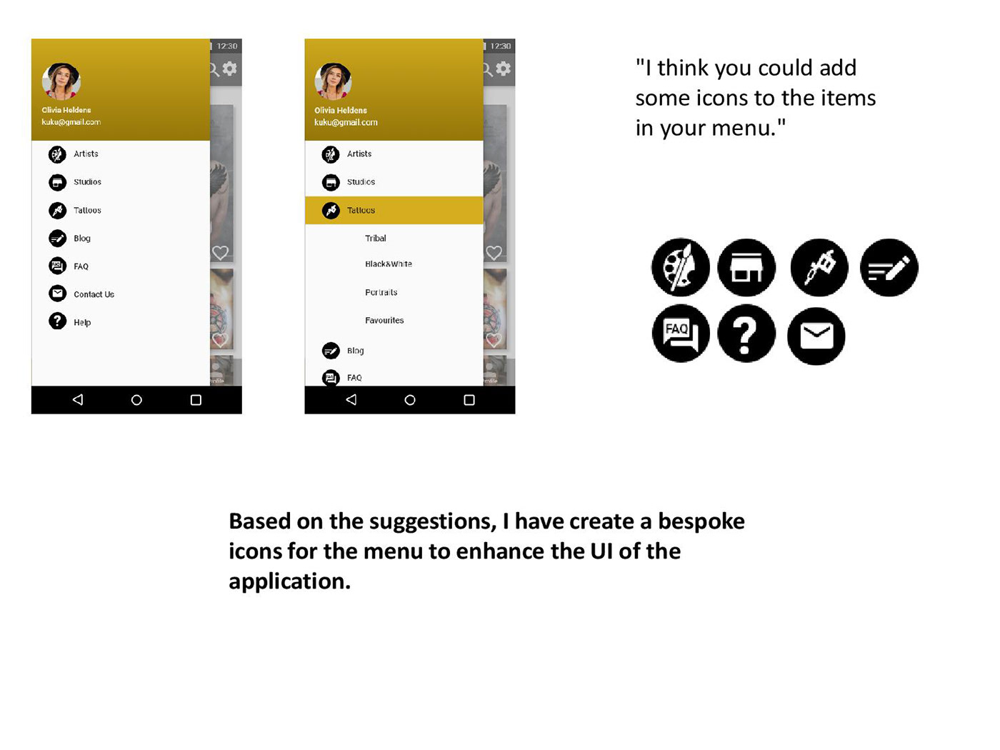
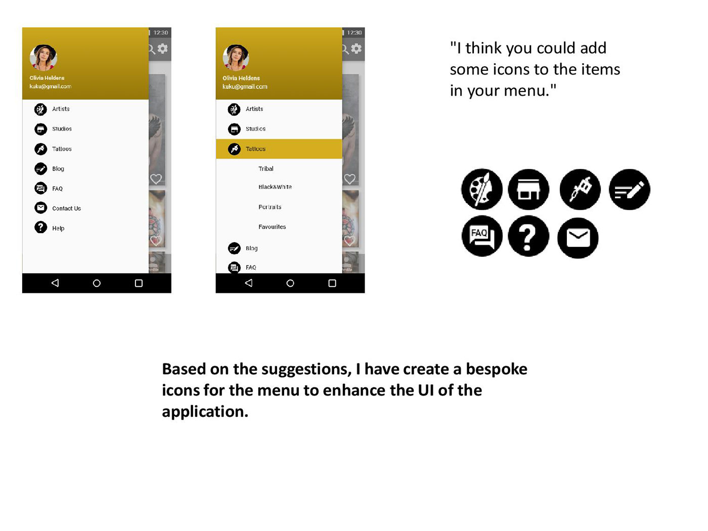

APLICACIÓN INKED
Inked App es un proyecto único de UX donde fuimos responsables de implementar todo el proceso de UX, así como el diseño de los esquemas y prototipos de alta fidelidad.
Para establecer el problema que podría enfrentar un aplicación social que se centra en la industria del tatuaje, realizamos entrevistas iniciales con clientes potenciales del tatuaje, así como con profesionales de la industria. También proporcionamos un análisis profundo de los competidores con sus fortalezas y debilidades y aprendimos del resultado.
Nuestros hallazgos mostraron que los principales problemas en esta área son la falta de conocimiento cuando las personas deciden hacerse tatuajes y la dificultad para extraer inspiración de varias fuentes en Internet.
INVESTIGACIÓN
Sobre la base de esta investigación, hemos creado los siguientes enunciados de problemas e hipótesis.

Los usuarios de nuestra aplicación de tatuajes necesitan una manera de recopilar información importante sobre los tatuajes (cómo cuidarlos, su significado, diferentes técnicas y estilos),
artistas y estudios de tatuajes (comentarios de clientes, ubicaciones, rangos de precios, reputación) antes de tomar la decisión de adquirir un tatuaje por sí mismos. Esto es debido a que el mercado de los tatuajes creció exponencialmente en las últimas décadas y se está volviendo difícil distinguir a los tatuadores experimentados y profesionales y obtener una ayuda válida para elegir el diseño correcto.
Creemos que al crear una aplicación social centrada en el usuario, lograremos un aumento de las referencias de parte de los clientes en nuestra aplicación y un número cada vez mayor de descargas en el AppStore o Google Play. Por lo tanto, el desafío con esta aplicación es crear un espacio confiable donde los usuarios puedan conectarse con personas afines, compartir su información y experiencias y obtener inspiración para sus obras de arte o tatuajes.
Al analizar los resultados de nuestras entrevistas pudimos obtener una comprensión más profunda del pensamiento de nuestros usuarios potenciales. Esto nos ayudó a resaltar los problemas y preocupaciones más importantes que tienen las personas al decidir adquirir tatuajes y también a descubrir los deseos que tienen al usar aplicaciones móviles.

DISEÑO
Gracias a la colaboración con algunos de mis colegas, logramos establecer funciones y categorías principales de la aplicación, en las que se dividirá el menú de navegación de la aplicación.
Nuestro equipo comenzó a esbozar el diseño en papel en este punto. Rápidamente aprendimos cuán importante es la colaboración dentro del equipo y con las partes interesadas, ya que con su ayuda, descubrimos problemas que se hubiesen podido haber pasado por alto. Por ejemplo, faltaba la pantalla de la galería del artista en nuestro diseño inicial.
Después de solucionar este primero de muchos problemas, pudimos crear el primer prototipo de baja fidelidad utilizando el programa Balsamiq. Como nos dimos cuenta más adelante, hubiese sido buena idea poner a prueba este prototipo inicial.
En el futuro, nuestro equipo probará todos los prototipos desde el principio con al menos 5 usuarios potenciales para tener la oportunidad de descubrir posibles fallas de diseño al comienzo del proceso y ahorrar tiempo.
PRUEBAS

Con el diseño casi listo, llegó el momento de ponernos en contacto una vez más con nuestros usuarios potenciales para probar el prototipo de fidelidad media. Utilizando la aplicación Marvell y el guión de prueba escrito previamente, el prototipo se probó con 6 clientes potenciales. Todas las pruebas fueron moderadas, 5 en persona y 1 a distancia.
Estas pruebas nos permitieron descubrir algunos problemas dentro del diseño, algunos más significativos que los otros, pero todos necesitaban algún tipo de tratamiento. Por ejemplo, nuestra falta de capacidad para compartir imágenes desde la pantalla principal se consideró una falla significativa,
ya que nuestro objetivo es crear una aplicación social y compartir ideas, esta debe ser su función principal.
MEJORAS
Al final del proceso, después de revisar otras aplicaciones sociales que se centran en el impacto visual, se tomó la decisión de rediseñar nuestra pantalla de inicio y realizar una prueba de preferencias con nuestros clientes potenciales para ver qué versión preferían.
El nuevo diseño fue enormemente más popular, como se puede ver en la captura de pantalla de la prueba de preferencias de Usabilidad Hub.
Con el nuevo diseño de la pantalla de inicio fue necesario que otro usuario realizara pruebas para ver si habían errores de funcionalidad.
La parte final del proceso de diseño fue pulir la interface del usuario utilizando diseño de grillas y espaciado, revisar las pautas de accesibilidad y realizar ajustes para adaptarse a personas con diferentes necesidades y lograr una aplicación agradable a la vista y al mismo tiempo fácil de usar.
Los elementos se ajustaron utilizando cuadrículas de 6 columnas, según las pautas de respuesta de bootstrap. El color secundario se ajustó utilizando un comprobador de contraste de color para adaptarse a la calificación AAA. Se agregaron mensajes de advertencia de error para adaptarse a los usuarios con discapacidades visuales y, por último, también se agregaron etiquetas y marcadores de posición para lograr un diseño más claro y accesible.
Aprendimos que es muy importante revisar las pautas durante el proceso de diseño para lograr un diseño que se adapte a todos sin restricciones. Como última parte del proceso de diseño, se invitó a otros diseñadores a colaborar en el diseño y se tuvieron en cuenta sus sugerencias.
Como se mencionó anteriormente, esta fue la parte más importante del proceso, ya que nos abrió los ojos y nos permitió ver errores que se hubiesen podido haber ignorado.
IMPLEMENTACIÓN
 

Durante este proceso de diseño de UX, hemos aprendido que el diseño de una aplicación no se puede hacer individualmente. Incluso cuando se trabaja de forma remota, es crucial colaborar con otros profesionales (diseñadores de interfaces de usuario, desarrolladores, etc.).
Esto le permitirá al diseñador ver su trabajo desde otra perspectiva, asumir la crítica de otros diseñadores y aprender de sus propios errores y los de otros.